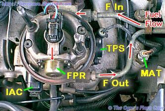
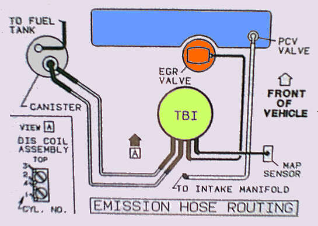

Go Home
Site Map
Go Home
Site Map
700 Series TBI
Warning: Check the fuel regulator for leaks!
700 series is very reliable but the fuel regulator diaphragm does wear out causing fuel leak. When you have leakage then get the rebuild kit. (Standard Motor, Part # 1637B and others.) Kit comes with the diaphragm and all gaskets etc.
Do not remove the cover, retighten screws, or any thing else until you have a new diaphragm.
History & Important Parts
The TBI used for 87-88 Fiero 4 cylinder motors is the 700 series unit presently manufactured by Delphi Automotive for GM.
You can find Delphi's public relations info for the 700 TBI here. (The products have been discontinued.) The information includes images and general specification data. Read "Throttle Bodies - Single Point" and "Throttle Bodies - Multec Bottom Feed." The first is the TBI unit and the second is the injector in more detail. Fiero uses the low-pressure version.
See also: TBI 700 Exploded
Below you can see how the TBI is setup and where some of it's components are. I also noted the MAT sensor for you. (MAT is also covered in the DIS article.)

- FPR, Fuel Pressure Regulator
- TPS, Throttle Position Sensor
- IAC, Idle Air Control motor
- F In/Out, Fuel Lines
- MAT, Manifold Air Temperature
The design of this TBI is really something. It can tolerate amazing amounts of crap in the fuel system without plugging the injector. There are screens right on the injector. You'd have to cover them nearly completely to block off injector flow. To get that much trash to the TBI, both the main filter and the pickup sock in the tank would have to fail or you'd have to have major corrosion damage to the inside of the fuel lines.
The 700 TBI is comprised of two modules. The upper section handles all the fuel metering and is the same regardless of what lower section is used. The lower section handles all the air metering and contains the throttle plate and IAC. There is no fuel flow between the modules except what flows from the injector tip. 700 TBI bore diameter is determined entirely in the lower section. (If you were punching out a 700, you would only machine the lower half. The lower section, assuming there is enough metal, can be punched to the maximum diameter of the upper half.)
BTW, the TBI used for 87 and 88 Fiero L4 has a 45mm diameter main bore. The largest Delphi makes is 48mm. You could install a 48mm one but you'll need to ream the manifold and you probably won't gain much power.
Do I need to use injector cleaner in my gas?
Probably not. The cleaners already present in most pump gas should be more than enough. Keep in mind that this injector is not being heat soaked like port injectors are after engine shutdown. It's far from the intake valves and upstream of the throttle as well. That prevents fuel residue from cooking onto the injector.
The only time I can think of where cleaner might help is if the car sat parked for a long time. That should help wash away anything caused by stale fuel.
With this system, if you are finding allot of carbon in the TBI and intake then you have problems developing that need more than some cleaner. (You will likely also need to check/replace the MAT sensor.)
Throttle Position Sensor
The TPS is not adjustable. The ECM is programmed to accept any slight variation in the home position of the sensor and recalibrates the home position each time the engine is started.
The TPS does wear over time, but it should last many years under most conditions.
Do not attempt to clean the sensor and never spray it with solvents or pressure washers.
The easiest way to test the TPS is to use a sewing needle to probe the terminals. It's long and very thin so you are less likely to cause a short if you slip. Simply slip the needle between the wire and the seal. If you short the terminals to anything you could fry the ECM!
One terminal will show 5V. Another terminal is ground. The last is the output. The TPS output should show less than 1.25 volt when the TBI is at idle. Output voltage should increase smoothly between idle and WOT. (Note: It is usually easier to test the sensor with an analog meter. Digital displays are often too jittery.)
The Injector
Note: Don't rely on the visual appearance of the injector output. In most cases you won't be able to tell a good spray amount/pattern by eye. These systems nearly always look like shower heads when running. Keep in mind that unlike port fuel injection, fuel from the TBI has plenty of time to mix on the way to the cylinders. The TBI is also on a heated manifold just like a carburetor uses.
If the injector is leaking it will tend to do that as soon as the system pressurizes. The most common leak is O-ring failure but it is possible for the injector to leak internally.
The injector used in these is built like a tank. I don't think I've heard of more than one or two that was actually bad. I'd say 99% of the time if the injector weren't firing that you need to check the fuel pressure and the signal from the ECM.
If the injector is leaking, make sure it's not one of the two O rings. The O rings are more likely to fail than the injector. If the O rings are bad, then I'd rebuild the TBI and replace all the other stuff as well.
There are test ("noid") lights for the injector used in the 700. Use them! A single noid light costs around $6 while the injector costs $75 to $100 or more. You can get noid lights at many parts stores. You can get whole sets of them online from various sources.
Idle Air Control motor
Contrary to popular belief the IAC is very well designed and will last nearly forever under most conditions. If you think there is an IAC problem your first project should be checking for vacuum leaks and EGR problems.
DO NOT spray the IAC with "carb" cleaner. If you must try to clean it, use electronics parts cleaner. Strong solvents can eat the insulation off the coils.
You can now get test ("noid") lights for IAC as well as the injector. I've seen these for about $10 at Pep Boys.
Ideally, you'll use an IAC noid with an ECM scanner. The lights on the noid should match whatever the scanner says the ECM is doing. The quickest test is to plug in the noid light and create a small vacuum leak or turn on the AC. (If the AC works...) Either one should cause the ECM to try to adjust the IAC. Even simply moving the throttle some should create an IAC change.
When does the IAC reset?
Per GM service documents:
The IAC valve will be reset by the computer when the vehicle speed exceeds 43
MPH while the engine speed is above 2000 RPM.
Or
When the diagnostic test
connector is grounded when the engine RPM is above 2000 RPM.
Fuel Pressure Regulator
The fuel pressure regulator is very unlikely to fail. If/when it does, it usually leaks externally. It could be possible for something to get trapped in the regulator and hold it open. Corrosion of the regulator valve and seat are unlikely. They appear to be Stainless Steel. Keep in mind that if you remove the regulator that it may not seal reliably when you put it back on. Do NOT use gasket sealer on it! If it leaks then it needs to be replaced.
The fuel pump on the other hand is a common failure item, especially if you've run the tank dry. The fuel flow cools the pump and it won't take long to cook when running dry. (This is true of the many kinds of pumps, not just fuel pumps.)
The quick test for no or low pressure is to pinch the fuel return line and see if you get pressure. This may help if the regulator is blocked open but probably won't do a thing if the pump is batty.
There is a fuel pressure gauge set available for TBI and other low-pressure systems that don't have Schrader valves. The set includes and adapter that save you from cutting the line to install a T. These sets are expensive, typically over $50. You may be able to borrow one from some parts stores. (The expensive part is the adaptor that installs between the fuel line and the TBI body so you can connect the gauge.)
Fuel Filter
It's under the car and can be a real pain to change.
You want to change this every so often, like once a year or so. These filters are built like a small oil filter internally and hold a tremendous amount of garbage.
The only way I can think of that you could plug the thing are if the fuel line is going bad or if the pickup sock in the tank fails. If you seem to loose fuel pressure after the car runs for a while, the filter could be the problem.
If you are going to remove the filter for any reason then just replace it. They don't cost very much and you can usually get them even cheaper at places like Wal-Mart.
Repair & Rebuilding
NOTICE: The throttle position sensor (TPS), idle air control (IAC) valve, pressure regulator diaphragm assembly, fuel injector or other components containing rubber, SHOULD NOT be placed in a solvent or cleaner bath. (No spray can Carburetor, EFI cleaner, or other strong solvent on electric parts.) A chemical reaction will cause these parts to swell, harden or distort. Do not soak the throttle body with the above parts attached. If the throttle body requires cleaning, soaking time in the cleaner should be kept to a minimum. Some models have hidden throttle shaft dust seals that could lose their effectiveness by extended soaking. (Source: 88 Fiero Service Manual)
When installing the IAC motor, make sure the pintle is retracted. DO NOT force the IAC motor into the throttle body! If the IAC motor will not easily seat fully in the body then the pintle is too far out. You should be able to seat the motor fully into the throttle body with little effort.
Carefully check the TBI mounting holes in the manifold. These holes can be damaged if the air cleaner has impacted the trunk wall. (Read the torque strut article.) If the holes are stripped you'll have to use Helicoils on them.
If the throttle shaft is badly worn, find another TBI unit. You should be able to find these fairly easily at any salvage yard. Otherwise the 700 unit is very easy to rebuild.
Don't mess with the idle stop during rebuild! There's no reason to fool with it.
The rebuild kits include the fuel pressure regulator diaphragm. If the FPR diaphragm is bad then just buy the rebuild kit and be done with it. The kit isn't that much more than buying the diaphragm and you get all the gaskets, O rings, and screens. You essentially end up with a new TBI unit.
The rebuild kit usually comes with more gaskets than you will use. The last one I bought came with three mounting gaskets and two body gaskets. You should use the replacement gasket that matches the original.
Assembling and Mounting the TBI
When you put the two halves of the body together torque the screws to specification.
After you torque the mounting bolts, check the body screws again and torque as needed to reach specification. The mounting bolts often cause the body bolts to loosen. If you don't check them the upper body could warp and cause an air leak.
| Hardware | Torque |
|---|---|
| Fuel metering to throttle body screws | 53 in/lb (6 Nm) |
| TBI to manifold bolts | 18 ft/lb (25 Nm) |
(Source: ALLdata)
In case you don't have a VECI label on the deck lid... Here's how the vacuum lines connect to the 700. (It's a photo of my VECI label that I was farting around with.)

Documentation
The 700 TBI is not covered in the Haynes Fiero book. Haynes does cover the 700 in their 86-96 Fuel Injection book. (Haynes # 10220) This book covers both versions of TBI used in Fiero. Amazon lists the book as out of print but it can still be found in many part store inventories.
The only other book I know of that documents this unit is the Helm shop book. While expensive, these books cover all the year specific items left out of Haynes and Chilton. They also carry replacement Owners Manuals and other info.
ALLDATA DIY is a good source. This is the online version of the CD/DVD product they are well known for. While you can work directly from their data, I usually consider them a supplement to other sources, including the Helm book. ALLDATA has all the TSB and Shop Manual updates you just can't get anywhere else. If the online version allows printing, I'd say join them for a year and print everything you can get your hands on. (I strongly recommend a laser printer over an ink jet. Most ink jets are likely to eat multiple cartridges doing this.)
Adjustment Procedures
The only adjustment possible on the 700 is to the idle stop screw. With the possible exception of new replacement units, there is no reason I can think of that you should ever adjust the idle stop. All the ones used on 2.5 liter motors should transplant without changing the idle stop.
The only reason I'm covering the idle stop adjustment is because every so often you run into a motor where some hack has screwed it up. You'll know if that's happened because the Idle Stop seal will have been removed.
Idle Stop
Warning: Do not use a ECM Scan tool to make this adjustment! ECM scanner mess with timing and gives you higher RPM.
Short version...
- Plug any vacuum port, as required.
- Jumper ALDL terminals A & B.
- Turn on key, engine off, and wait 45 seconds. This will close IAC pintle.
- Unplug IAC while key is still on.
- Turn key off and remove the ALDL jumper.
- Start car and set Idle Stop screw for 600 +/-50 RPM. (550 - 650 RPM is fine.)
- Shut off the car and plug the IAC in.
- Replug any vacuum ports.
Source: 1988 Fiero Service Manual, page 6E2-C2-12 thru 13.
Notes:
Use a good tachometer, not the dash tach. It is easer and more accurate.
Once you are done, clear any errors that may have been set in the ECM.
Performance
This section is mainly a bunch of pondering. I'm still looking into most of it. I thought I'd put in what I had in case it's useful to someone who wants a bit more power from the DIS motor. (It could also be useful to someone replacing a fried DIS motor...)
As I mentioned above, the Fiero TBI has the 45mm main bore. You might be able to find a 48mm unit to install. How much power you'd gain from that I couldn't say but it's something to keep in the back of you head if you are building up a DIS motor. It may be possible to bore out a TBI unit but I wouldn't hold me breath on it. It's not something you can do without a good machine shop.
If you do go looking for a 48mm unit, check the intake manifolds and head of later model DIS L4 as well. This could save modification of the stock manifold and may give you larger intake runners etc.
The reason I say this is that GM specified the 91 Olds Cutlass Calais (VIN U?) Iron Duke at 112HP. I've seen that motor once and only externally. It looked identical to the 1988 engine. (Balancer motor.) They had to ring out the extra from someplace.
In reality, you'd be better off seeing if the 1991 engine would work in Fiero and then building that up if needed. That gives you an engine 5-6 years newer as a base. I couldn't see why it would not but I haven't been able to really dig into one yet. You should be able to get one for about $200-300 from a local salvage yard. (I believe 1991 was the last year for this engine.)
If you do that, make sure you also get its ECM! The PROM chip has information in it that may be needed. I'm pretty sure the thing still uses the same ECM as Fiero. Assuming the ECMs are the same, the VSS flag in the PROM isn't. You'll have to trick the ECM or burn a new PROM with the correct VSS flag. (You could just use the Fiero PROM but you'd loose updated code in the 91 PROM. The original Fiero PROMS have a few minor issues...)
Fuel Pressure
According to what I'm told, you can make the fuel pressure regulator adjustable. If you try this, do it to a spare regulator cover. It involves cleaning out the sealer/solder over the regulator screw. You may also need a longer screw and a jam nut to prevent the pressure from changing due to vibration. (Someone in the forum did this once. I forget who...)
To tune it, you'll need a fuel pressure gauge and a chassis dyno or a Gtech unit. You really don't want to do this by feel alone.
The idea is to start from OE pressure and tweak the thing up a little bit at a time until performance peaks. (It's a bit more involved than I'm covering here.)
Note that too high/low pressure could cause DTC 45 or 44 set by ECM. Keep in mind that if you restrict fuel flow too much you could burn out the fuel pump!